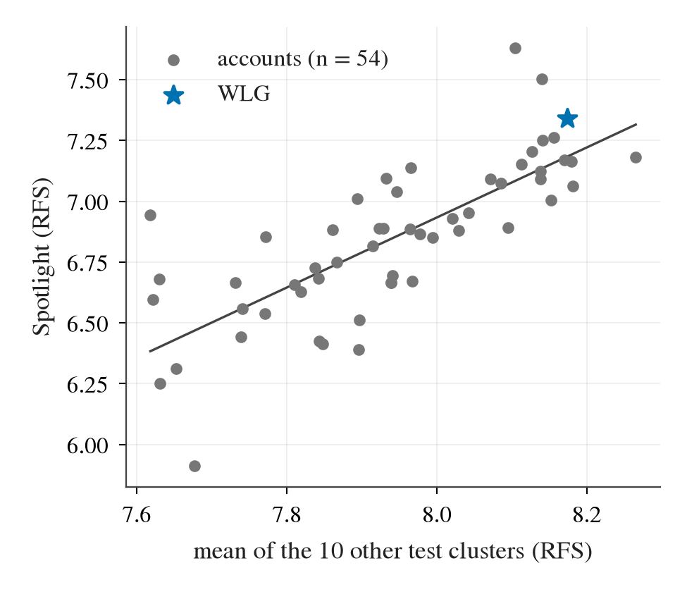
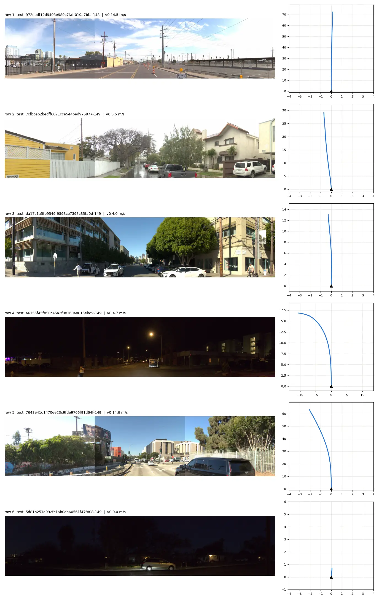
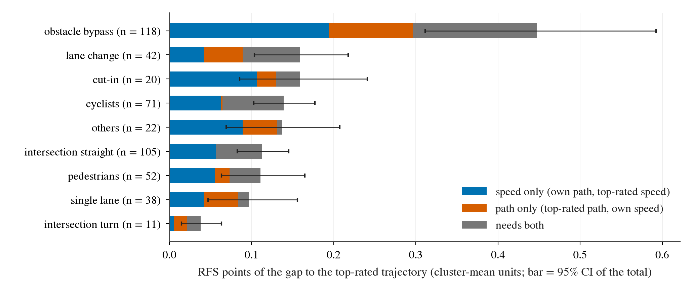
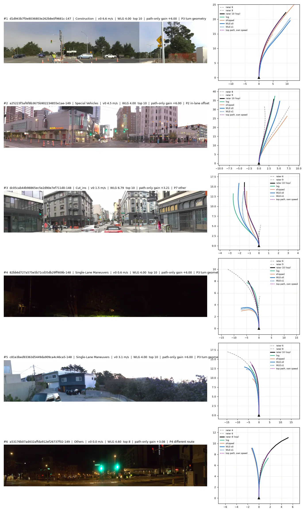

2026-10-10，侦察线 WODSCOUT，决策 242。只做测量：不训练、不提交、不用测试集标签，没有用显卡。基线是 WLG（两个种子，验证集 RFS 8.187，测试集 8.099）。预登记在读数之前提交。
测试集的清单只给出「序列对应的帧号」，场景类别标签只覆盖验证集的 479 个序列（十类，没有 Spotlight），每帧的数据里也没有场景标签，官方评测只返回十一个类别的平均分。论文对它的定义只有一句「人工挑选的高难度场景」。因此下面都是间接读数。来源：experiments/wod_scout/results/q1_spotlight.md。
| 量（验证集 479 帧对测试集 1 505 帧） | 验证集 | 测试集 | 差值及 95% 区间 |
|---|---|---|---|
| 静止帧占比（初速低于 0.5 米每秒） | 0.251 | 0.251 | +0.001 [−0.045, +0.044] |
| 夜间帧占比（亮度低于 50） | 0.271 | 0.279 | +0.008 [−0.039, +0.053] |
| 有前车的占比（出厂模型的前车概率大于 0.5） | 0.344 | 0.376 | +0.032 [−0.018, +0.079] |
| WLG 的规划为转弯的占比 | 0.109 | 0.102 | −0.007 [−0.039, +0.024] |
| WLG 的规划原地不动的占比 | 0.077 | 0.082 | +0.004 [−0.024, +0.031] |
读法：23 个量经多重比较校正后没有一个不同，原始 p 值最小为 0.070。用这些量训练一个只作统计检验用的分类器来区分两个集合，AUC 为 0.553（逻辑回归，置换检验 p 值 0.010）和 0.521（梯度提升，p 值 0.235），都低于预登记的 0.60，判为「分不开」。夜间占比的差值上界 5.3 个百分点略高于预登记的 5 个百分点，按登记线记为「未证实」，点估计没有超额：此前「Spotlight 不是弱光」的说法没有被推翻，也无法直接验证。

| 测试集类别 | 与 Spotlight 的秩相关 | 扣除其余九类平均后的偏相关 | 是否满足预登记的三条判据 |
|---|---|---|---|
| 多车道变道（Multi-Lane Maneuvers） | 0.765 [0.613, 0.856] | 0.343 [0.050, 0.599] | 是 |
| 路面异物（Foreign Object Debris） | 0.749 [0.580, 0.851] | 0.323 [0.075, 0.563] | 是 |
| 被切入（Cut-in） | 0.744 [0.598, 0.832] | 0.361 [0.074, 0.597] | 是 |
| 其余七类 | 0.415 到 0.678 | −0.099 到 +0.113，区间都含 0 | 否 |
读法：这三类是按登记定义的「可用代理」，但只代理方法的排序，不代理分数水平，而且偏相关的下界只有 0.05 到 0.08，证据弱。WLG 在测试集上领先榜首的四个类别是多车道变道（+0.244）、Spotlight（+0.158）、被切入（+0.116）和骑行者（+0.040），前三个正是这一组。

做法沿用决策 164 的交换构造：保留自己的路径、换成最高分轨迹的速度（只改速度）；保留自己的速度、换成最高分轨迹的路径（只改路径）。分数按类别平均计，各部分可以相加。来源：experiments/wod_scout/results/q2_path_budget.md。
| 1.400 分差距的组成 | 分数及 95% 区间 | 占比 |
|---|---|---|
| 只改速度 | 0.657 [0.475, 0.843] | 47% |
| 只改路径 | 0.290 [0.166, 0.432] | 21% |
| 必须两者同改 | 0.453 [0.319, 0.599] | 32% |
| 只改速度拿不回的全部（后两行之和） | 0.743 [0.565, 0.928] | 53% |

| 情景 | 帧数 | 差距 | 只改速度 | 只改路径 | 判定 |
|---|---|---|---|---|---|
| 绕障（异物、施工、特种车辆三类） | 118 | 0.447 | 0.194 [0.078, 0.323] | 0.103 [0.019, 0.215] | 两者都有 |
| 变道 | 42 | 0.159 | 0.042 [−0.010, 0.098] | 0.048 [0.016, 0.087] | 判不出 |
| 被切入 | 20 | 0.159 | 0.107 [0.045, 0.177] | 0.023 [−0.008, 0.066] | 速度 |
| 骑行者 | 71 | 0.139 | 0.063 [0.022, 0.106] | 0.002 [−0.018, 0.018] | 速度 |
| 路口直行 | 105 | 0.113 | 0.059 [0.029, 0.089] | −0.002 [−0.017, 0.009] | 速度 |
| 行人 | 52 | 0.111 | 0.055 [0.008, 0.106] | 0.018 [−0.014, 0.053] | 速度 |
| 路口转弯 | 11 | 0.038 | 0.006 [−0.006, 0.019] | 0.016 [0.004, 0.032] | 路径 |
| 全部转弯指令帧（与上面各行有重叠） | 52 | 0.282 | 0.055 [0.004, 0.114] | 0.114 [0.046, 0.189] | 路径 |
只改路径有正收益的有 114 帧，为负的有 40 帧；收益最大的 30 帧合计 0.290，即全部净值，前 10 帧占 60%。对这 30 帧逐帧看图（类别在看图之前写定）：
| 最高分轨迹与我们的差别 | 帧数 | 只改路径的分数 | 说明 |
|---|---|---|---|
| 转弯几何（都在转，半径或切入点不同） | 14 | 0.149 | 12 帧我们的规划在内侧；14 帧带符号的内侧偏移中位 1.9 米；11 帧初速低于 5 米每秒；6 帧被压到最低分 4.0 |
| 车道内偏移 | 4 | 0.054 | 沿停放车辆或锥桶偏 1 到 2 米 |
| 路线不同（一条转、一条不转） | 5 | 0.043 | 其中 4 帧给的指令是「直行」，最高分轨迹却在转 |
| 走另一条车道 | 5 | 0.034 | 3 帧在 15 到 25 米每秒 |
| 其他 | 2 | 0.011 | 一帧是无路灯夜间没跟上弯道 |
全部 52 个转弯指令帧的只改路径分数为 0.114，按初速分：静止 0.004（WLG 的静止门已经修掉），0.5 到 5 米每秒 0.093（28 帧）。这一块就是决策 169 第 5 点、决策 175 第 2 点说的低速入弯内切；总量 0.290 就是决策 218 补记的数，与决策 164、168 量的是同一块空间，不能相加。

来源：experiments/wod_scout/results/q3_strata.md。
| 分层 | 帧数 | WLG 丢的分及 95% 区间 | 只改速度 | 只改路径 | 判定 |
|---|---|---|---|---|---|
| 夜间 | 133 | 0.386 [0.272, 0.515] | 0.167 [0.071, 0.274] | 0.065 [0.019, 0.122] | 速度 |
| 白天 | 325 | 0.913 [0.733, 1.101] | 0.432 [0.289, 0.588] | 0.215 [0.099, 0.349] | 速度 |
| 行人类 | 52 | 0.111 [0.063, 0.165] | 0.055 [0.008, 0.106] | 0.018 [−0.014, 0.053] | 速度 |
| 其他类（Others） | 22 | 0.137 [0.069, 0.208] | 0.089 [0.033, 0.155] | 0.042 [0.004, 0.085] | 速度 |
| 单车道类 | 38 | 0.097 [0.047, 0.156] | 0.042 [−0.002, 0.089] | 0.042 [0.005, 0.092] | 判不出 |
| 路口类 | 116 | 0.151 [0.115, 0.187] | 0.065 [0.033, 0.097] | 0.014 [−0.006, 0.034] | 速度 |
读法：夜间帧占 28%，丢的分也占 28%，夜间减白天的差距为 +0.29 [−0.10, +0.69]，区间含零。WLG 相对日志的 3 秒平均位移误差夜间 0.50 米、白天 0.60 米，夜减昼 −0.10 [−0.20, +0.01]；出厂模型在同一批帧上是 1.31 对 0.92 米，+0.39 [+0.19, +0.60]。也就是说决策 131 里出厂模型的夜间几何差距，在本域训练之后已经没有了，夜间剩下的是速度选择。
逐类对照验证集与测试集：只有骑行者类的测试分 8.007 落在验证集区间 [8.067, 8.834] 之外；其他类（−0.49）和行人类（−0.37）的下跌在区间之内，验证集各只有 22 帧和 52 帧，分辨不出。
来源：experiments/wod_scout/results/q4_label_supply.md。全量扫描 622 个数据分片的每一帧，只读字段结构，不读图像。
| 训练集 | 验证集 | 测试集 | |
|---|---|---|---|
| 帧数 | 415 663 | 106 360 | 203 776 |
| 序列数 | 2 037 | 479 | 1 505 |
| 带完整未来轨迹的帧 | 415 663 | 106 360 | 0 |
| 带评分轨迹的帧 | 0 | 479（478 个序列） | 0 |
| 目标框、地图、激光、车辆位姿、时间戳 | 全部 725 799 帧都没有（位姿与时间戳字段存在但全为零） | ||
| 可能的监督来源 | 规模 | 能否通向「评分员偏好」 |
|---|---|---|
| 验证集评分帧 | 479 帧，每帧 3 条评分轨迹 | 就是定义本身；在它上面训练的路都已到头（决策 171、173、175） |
| 训练集日志 | 415 663 帧 | 不能：日志不是评分员排第一的轨迹（决策 164、173） |
| 与 Waymo 感知数据集、运动数据集对接 | 0 | 不能：编号无对应，时间和位姿被清零，相机配置不同（8 路对 5 路），官方表示不提供位置信息 |
| nuPlan 上由地图和目标框计算的分项 | navtrain 约 10.3 万帧 | 可以算，但与评分员是否一致无法检验；唯一的迁移读数为零（决策 195） |
| DriveCritic（NAVSIM 场景上 5 730 对人工偏好） | 已宣布，未放出 | 唯一可能同时具备人工偏好与地图、目标框的数据 |
| 不需要地图的运动学量 | 任意帧 | 最好的两项对评分排序的一致率只有 56% 和 60%，其余在机会水平或反向 |
| 同一帧内评分较高的那条轨迹…… | 成对一致率及 95% 区间（1 429 对，机会水平 0.5） |
|---|---|
| 5 秒内走得更远 | 0.562 [0.531, 0.593] |
| 更接近日志的未来轨迹 | 0.598 [0.569, 0.627] |
| 制动更轻 | 0.537 [0.508, 0.567] |
| 横向加速度峰值更小 | 0.502 [0.474, 0.532] |
| 加加速度峰值更小 | 0.380 [0.352, 0.408] |
读法：预登记的「基本同向」线是区间下界 0.70，没有一项接近。评分员的扣分规则是从 10 分起，安全、合法、反应时间每项违规扣 2 分，制动和效率每项扣 1 分；前三项需要场景信息，在 WOD 上算不出来。比赛规则允许使用任何公开数据并需披露来源，不允许人工标注。
| 杠杆 | 大小 | 性质 | 有没有标签来源 |
|---|---|---|---|
| 必须路径和速度同改的帧（换一个空档或出口） | 0.453 [0.319, 0.599] | 实测，特权上界 | 只有 479 帧评分 |
| 只改路径，全部 | 0.290 [0.166, 0.432] | 实测，特权上界 | 只有 479 帧评分 |
| 其中：0.5 到 5 米每秒入弯的几何 | 0.093（28 帧） | 实测，无区间 | 日志里的转弯路径可用（训练集有左、右转指令帧 65 707 帧），评分只有 28 帧 |
| 其中：车道内偏移与走另一条车道 | 0.088（9 帧） | 实测，无区间，方向不一致 | 没有 |
| 其中：路线不同（一条转、一条不转；5 帧里 4 帧的指令是直行，这 4 帧合计 0.039） | 0.043（5 帧） | 实测，无区间 | 没有（测试集只给三值指令） |
| 夜间专项 | 约 0 | 实测：夜间不多丢分，几何误差不更大 | 不需要 |
| 针对 Spotlight 的专项 | 未知 | 无法测量 | 没有 |
| 在验证集上实际能留出的部分 | 以上各项的三分之一到四分之一 | 推测，依据决策 171 的缩水比例 |
全部读数来自验证集 479 帧上的特权交换，是缺口的大小，不是方法能拿回的量。路径预算压在约 30 帧上，分类型的数字没有区间；看图归类由一个执行者完成，与自动几何归类在 30 帧里有 22 帧一致。约 26 个分层各读三个对比，贴边的区间只算弱证据。榜单分析把账号当作独立样本。网页上的引述经过摘要工具转述。测试集各类别的分数来自一次提交的截图。
数据与脚本：experiments/wod_scout/（预登记在 plans/，表在 results/，图在 figs/）；box 上的运行目录在 $DATA_DIR/runs/wod_scout/。